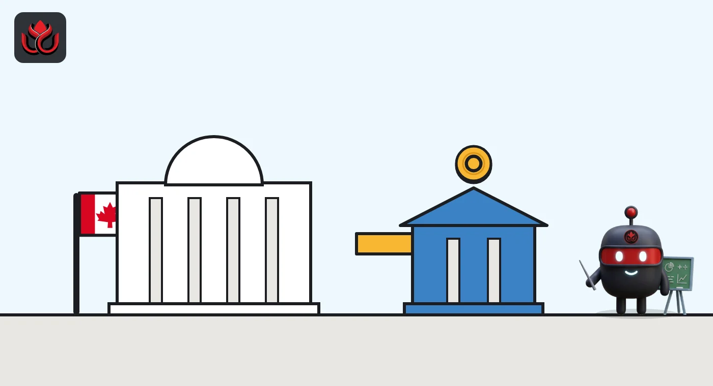

Canada proposes barring banks from issuing stablecoins directly. Subsidiaries only
Budget 2026 proposes to bar federally regulated banks, trust companies and insurers from issuing stablecoins themselves. They would have to use a separate non-financial subsidiary that the Bank of Canada supervises.
Key points
- Budget 2026 proposes amending three federal laws to stop federally regulated financial institutions from issuing stablecoins directly.
- Banks that want a stablecoin would issue it through a non-financial subsidiary regulated under the Stablecoin Act, which the Bank of Canada will administer.
- Draft Stablecoin Act regulations are open for comment for 60 days from their October 24, 2026 publication, and the government intends the rules to take effect in fall 2027.
What happened
Canada's federal government wants its banks to keep stablecoins at arm's length. In the legislative annex to Budget 2026, updated November 5, 2026, the Department of Finance says it will amend the Bank Act, the Trust and Loan Companies Act and the Insurance Companies Act "to prohibit federally regulated financial institutions from issuing stablecoins directly."
A stablecoin is a crypto token designed to hold a fixed value, usually one unit of a national currency such as the Canadian dollar. The proposal does not stop banks from taking part. It changes where the token would sit.
The subsidiary route
The budget's first chapter spells out the alternative. Federally regulated financial institutions would have to issue stablecoins through non-financial institution subsidiaries regulated under the Stablecoin Act. The same measure would extend that act to foreign financial institutions that are not prudentially regulated in Canada (prudential regulation means the capital and risk rules that apply to banks).
The annex adds one more clarification. For foreign banks and their affiliates covered by Part XII of the Bank Act, issuing a stablecoin would not count as being in the business of accepting deposits.

Why this closes a gap
Under the current text, the Stablecoin Act does not reach banks at all. The regulatory impact statement published in the Canada Gazette on October 24, 2026 says section 12 of the act makes clear it does not apply to financial institutions that issue stablecoins. The Department of Finance's framework page describes banks and credit unions as already covered by their own regulation.
Moving bank-backed tokens into subsidiaries would put every federal issuer under one set of stablecoin rules instead of two.
What the stablecoin rules require
According to the Department of Finance, the Bank of Canada will administer the framework and supervise issuers. The main requirements are:
- Reserves at least equal to the stablecoins in circulation, held in cash or high-quality cash-like assets at a qualified custodian.
- Redemption at par (one token back for one dollar) under a published policy.
- No interest or yield paid to holders.
The Canada Gazette notice says the government intends the regulations to come into force in fall 2027. Comments on the draft regulations can be sent within 60 days of the October 24 notice, which works out to about December 23, 2026.
Deposit insurance and next steps
The same budget proposes raising the Canada Deposit Insurance Corporation limit to $250,000 Canadian and removing the limit for eligible deposits in registered and tax-free accounts. The budget does not say that stablecoins would be covered.
Chapter 1 also says the government will keep talking with stakeholders about stronger consumer protection if a stablecoin issuer or custodian becomes insolvent. All of these measures still need legislation to pass Parliament.
LC Insight analysis
This section is our reading of the facts above, not a statement of fact.
- We think the subsidiary rule is meant to wall off a bank's deposit book from any run on its stablecoin. If the token fails, the losses should stay inside the subsidiary.
- The likely result is that Canadian banks can still compete with offshore dollar stablecoins, but under the same Bank of Canada rules as fintech issuers, including the yield ban.
- The open question is insolvency protection. Until the government settles it, holders of a bank-branded stablecoin may assume a safety net that the budget does not promise.
What's next
- The bill that amends the Bank Act and the other two laws
- Final Stablecoin Act regulations after the comment period ends in late December
- Any Canadian bank that announces a stablecoin subsidiary
Disclaimer. This article is based on public information and the sources listed below as of the update time shown. It is for information only and is not investment, legal or tax advice. Figures may change as companies and authorities publish new data.
Sources
- Department of Finance Canada, Budget 2026, Annex 3: Legislative measures (November 5, 2026)
- Department of Finance Canada, Budget 2026, Chapter 1 (November 5, 2026)
- Canada Gazette, Part I, Vol. 160, No. 43: Stablecoin Regulations (October 24, 2026)
- Department of Finance Canada, Canada's Stablecoin Framework (modified March 31, 2026)